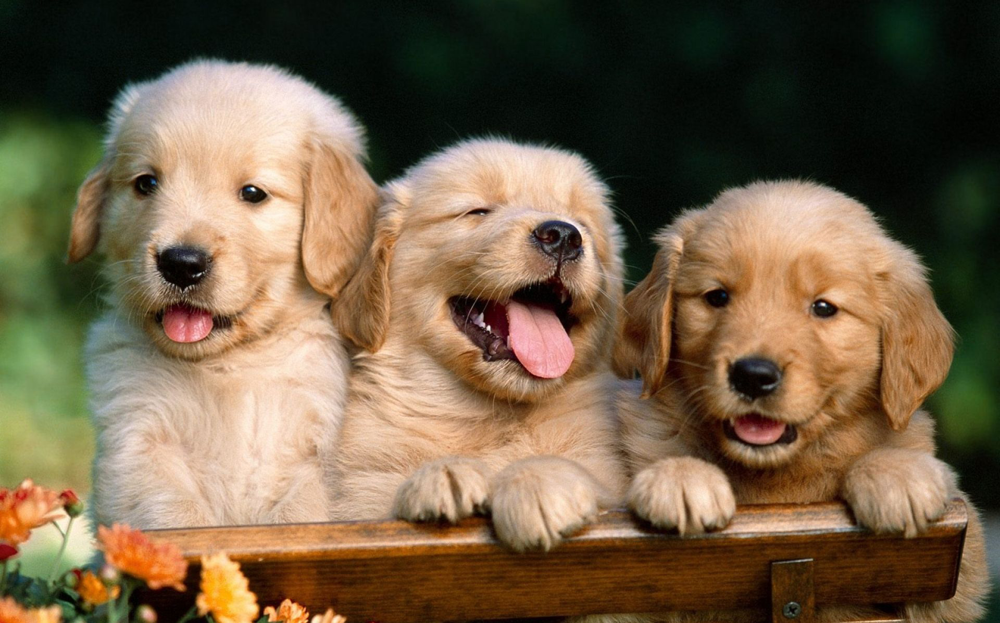

Golden retriever
Gepost op 24 mei 2016

De golden retriever is niet alleen een uitstekende apporteerhond,
maar ook een aanhankelijke, lieve en gehoorzame huis- en familiehond.
Hij is zelfs geschikt als geleidehond.
Zijn goudkleurige, halflange en golvende vacht maakte hem enorm populair.
De vacht is dicht en waterafstotend. De hond mag alleen effen goudbruin
(in verschillende nuances) zijn, niet roodbruin of geel.
Het is zeer belangrijk om een goede zoektocht te maken als je een Golden
Retriever in huis wilt halen. Hoe populairder de hond hoe meer overfokte
honden je krijgt van het bepaalde ras. Vooral bij de Golden Retrievers
komen er veel gestoorde honden voor door geen goede fokrichtlijnen te houden.
Hiermee bedoel ik dat er veel agressie gestoorde honden voorkomen en dit
is absoluut uit denboze voor dit ras. Omdat er zoveel fokkers zo onzorgvuldig
te werk gaan moeten de andere goede fokkers hiervoor op draaien. Het terug
recht zetten van een ras kan wel meer dan 5jaar duren.
Met tags:
#Puppies,
#LoveDogs,
#GoldenRetriver